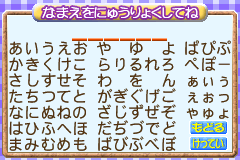

Manga-ka Debut Monogatari - Akogare! Manga Ka Ikusei Game! (Japan)
EEPROM 4K gbakit Built-In 💾 MultiBoot
Cartridge Identity
- Game Code
ACOJ(FamilyACO)- Header Title
MANGAKA- Maker / Revision
1Q/ rev0- ROM Size
- 4.0 MiB (4,194,304 B)
- Save Media
EEPROM 4K- SHA-256
66b97209e86ad2ffcf21de6160b72500b96ff2f752104462391f20e828bd761b- Engine / SDK Group
comm-022(10 families)
Screenshots

Link Cable & Multiplayer Communications
This title contains detected communication capabilities: 💾 MultiBoot.
Detailed protocol specifications, SIO registers, Joybus commands, and MultiBoot sequences are documented in the Link & Multiplayer Reference.
- Single-Cart MultiBoot
- Single-Cartridge MultiBoot (Download Play) client/server handler · Thumb SWI 0x25 (
0xDF25):0x0ba906,0x101b7a,0x353190
Battery Save Support in gbakit
Built-in definition (ACOJ)
gbakit save verify ACOJ save.sav
gbakit save decode ACOJ save.sav
gbakit save fix ACOJ damaged.sav -o repaired.savROM Assets, Compression & Audio
- BIOS Compression
- LZ77 (
0x10): 219 streams · RLE (0x30): 0 streams - ROM Pointer Tables
- 32 tables (0 pointing to validated compressed streams)
- SDK Backup Tags
EEPROM_V122
Asset Map (formatkit.asset-map.v1)
Download ACOJ-r1-4076271bcf44edb7.asset-map.json.gz (129,230 B (126.2 KiB)) Verified PASS · 37.63% coverage
| Metric | Bytes / Value | Entries |
|---|---|---|
| Identified | 1,504,184 B (1.43 MiB) (35.86%) | 1,162 |
| Mapped | 0 B (0.00%) | 0 |
| Opaque | 73,932 B (72.2 KiB) (1.76%) | 1 |
| Unknown | 2,616,188 B (2.49 MiB) (62.37%) | 1,076 |
| Total ROM Size | 4,194,304 B (4.00 MiB) | 2,239 |
| Coverage % | 37.63% | — |
| Entries w/ Code Refs | 1,176 / 2,239 (52.52%) | — |
Top Identified Formats: compress.bios-lz77 (250 · 1,236,784 B (1.18 MiB)) · gfx.gba-palette (910 · 266,720 B (260.5 KiB)) · audio.m4a-song-table (1 · 488 B) · gba.rom-header (1 · 192 B)
Largest unknown Extents (Headerless / Custom Asset Candidates)
| Offset | Size | Shannon Entropy | Code Refs |
|---|---|---|---|
0x0035BB7C | 349,828 B (341.6 KiB) | 6.967 bits/B | 0 |
0x003CD648 | 130,308 B (127.3 KiB) | 5.987 bits/B | 0 |
0x0033BA70 | 130,000 B (127.0 KiB) | 5.998 bits/B | 0 |
0x002CAD20 | 103,248 B (100.8 KiB) | 7.043 bits/B | 8 |
0x00301674 | 87,544 B (85.5 KiB) | 6.822 bits/B | 0 |
gzip -dk ACOJ-r1-4076271bcf44edb7.asset-map.json.gz && gbakit map verify rom.gba ACOJ-r1-4076271bcf44edb7.asset-map.json
gbakit assets export rom.gba --asset-map ACOJ-r1-4076271bcf44edb7.asset-map.json -o out/Text, Fonts & Scene Data
- Primary Text Encoding
- Shift-JIS (uncompressed) (
14ASCII strings ·200Shift-JIS runs) - Font & VWF Indicators
- VWF Width Table 1bpp Font · BIOS SWIs: BitUnPack
0x10:19· LZ770x11/12:22· Huffman0x13:8· RLE0x14/15:8 - Scene & Packaging
23ROM pointer tables (≥32 entries,1≥200) ·0relativeu32TOCs ·108OAM metasprite hits
Hardware MMIO Subsystems
ppu_display0x80006a8,0x80013d8,0x80013f0,0x8001ca4,0x8001d60